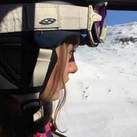

About Me
I'm studying M.Sc.eng in media technology, at KTH. I'm well organized and able to manage various projects and priorities in a timely manner. I'm passionately curious, enjoy trying new technologies, travel destinations, sports, movies and meeting new people. I have a passion for creativity, technology and design.
-

KTH Royal Institute of Technology
I started at KTH in 2015 and 2018 I took my bachelor degree in Interactive Media Technology. Right now I'm at my second year of my master and I'm doing my Master Thesis at the company Schibsted with focus on user research.
-

Interests
I love skiing and the season 2013/2014 I lived and worked in Val Thorens, France. This is one of the best things I have ever done! Also, I love spending time with friends and family. I like to work out and go out for a run. I like to watch movies and series and to travel and see new places and different cultures.
-
Skills
JavaScript, React, Sketch, Python, Unity,
XML, HTML, SQL, Vue, CSS, C#,
UX-design, Photoshop, SAP
-
Languages
Swedish ★★★★★★★★★★
English ★★★★★★★★
French ★★★★